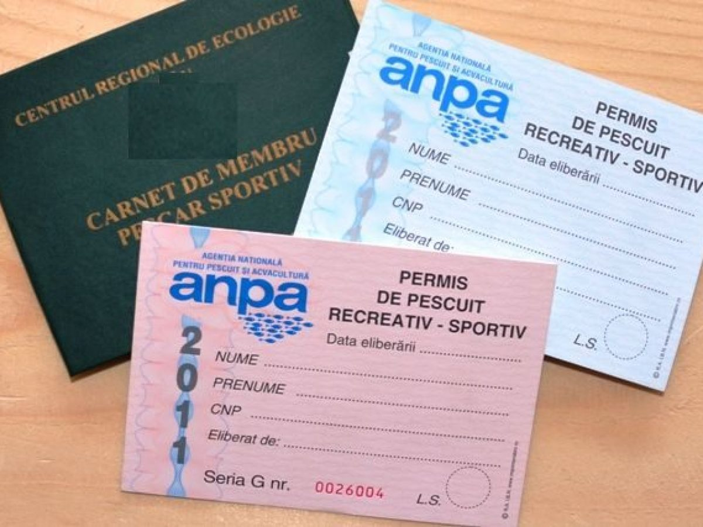

Reguli și protecția mediului.Cele mai importante reguli legislative pentru pescuitul sportiv in vigoare
Pescuitul sportiv trebuie practicat cu respectarea legislației în vigoare și a perioadelor de prohibiție. Respectarea legislației este o obligație a pescarului onest și are ca scop final rezultate benefice acestuia (mai mulți pești în apă). Încălcările legii, în funcție de gravitate, pot fi pedepsite cu: Avertismente (verbale sau scrise, de obicei pentru fapte mai puțin grave și pentru persoane aflate la prima abatere); Contravenții/amenzi (pentru fapte mai grave); Amenzi penale/lipsire de libertate/dosare penale (pentru fapte de o gravitate accentuată). Atenție! Faptele grave sunt prevăzute cu amenzi între 6.000 și 10.000 de lei sau ÎNCHISOARE! 1.Fapte ce sunt pedepsite cu amenzi între 1.000 – 1.500 lei: Pescuitul fără permis; Neprezentarea permisului de pescuit; Încălcarea condițiilor prevăzute în permis (ex. pescuitul în ape cu păstrăv folosind mai mult de o lansetă sau cu mai mult de două cârlige); Reținerea peste limita permisă de lege (ex. peste 10 păstrăvi sau 5 kg pește în zonele colinare/de șes sau 2-3 păstrăvi); 2.Fapte ce sunt pedepsite cu amenzi între 2.000 – 4.000 lei: Pescuitul salmonidelor (păstrăvilor și lipanilor) cu momeli naturale; Pescuitul cu mai mult de 3 muște artificiale în apele salmonicole; Prinderea salmonidelor cu mâna, cu unelte de pescuit comercial sau cu alte unelte de pescuit confecționate artizanal; Pescuitul la șes cu mai mult de 3 undițe și/sau 4 lansete cu câte două cârlige pe fiecare; Nerespectarea păstrării curățeniei și necolectarea în saci menajeri a deșeurilor existente în zona de pescuit/habitatele acvatice naturale, de către pescarii recreativi; Mutarea, deteriorarea sau distrugerea semnelor indicatoare (panourilor) cu semnificație piscicolă; Mutarea, deteriorarea sau distrugerea din culpă a semnelor indicatoare cu semnificație piscicolă; Pescuitul recreativ pe cursul unei ape curgătoare în zona de 500 m aval de baraj; 3.Fapte cu amenzi între 6.000 și 10.000 de lei și cu reținerea și suspendarea pe o durată de 120 de zile a permisului: Pescuitul în prohibiție (inclusiv reținerea peștilor în zone cu eliberarea capturilor sau închise la pescuit (de refacere biologică) tot aici se încadrează), adică pescuitul în zone de protecție sau a păstrăvului în perioada 1 octombrie-31 martie sau a lipanului tot timpul anului; Neasigurarea debitului de apă necesar în vederea dezvoltării normale a resursei acvatice vii în aval de o lucrare de barare; Comercializarea capturilor provenite din pescuitul recreativ sau în scop științific; Circulația autovehiculelor de orice tip și transportul cu orice mijloace al buștenilor prin albia minoră a râurilor și pâraielor din zona de munte; 4.Unele fapte constituie INFRACȚIUNI, care înseamnă automat DOSAR PENAL și interzicerea dreptului de a pescui pe o perioadă cuprinsă între 1 și 5 ani. De asemenea, sunt supuse ridicării în vederea confiscării uneltele și ambarcațiunile de pescuit, animalele, mijloacele de transport, armele de foc și orice alte bunuri care au fost folosite la săvârșirea infracțiunilor! a.Reprezintă INFRACȚIUNI, pedepsite cu închisoare de la 2 ani la 5 ani și interzicerea dreptului de a pescui pe o perioadă cuprinsă între 2 și 4 ani, următoarele fapte: Pescuitul prin orice metode al reproducătorilor, în perioada de prohibiție, și distrugerea icrelor embrionate de pește în zonele de reproducere naturală; Pescuitul cu japca, cu ostia, cu sulița, țepoaica sau cu orice alte unelte sau scule neautorizate, prin greblare sau harponare; Deținerea sau folosirea la pescuit de către persoanele neautorizate a setcilor, năvoadelor, voloacelor, prostovoalelor, vârșelor, vintirelor, precum și a altor tipuri de unelte de pescuit comercial; b.Iar următoarele fapte sunt pedepsite cu închisoare de la 3 ani la 5 ani și interzicerea dreptului de a pescui o perioadă cuprinsă între 3 și 5 ani: Pescuitul electric, deținerea aparatelor și dispozitivelor care distrug resursele acvatice vii prin curentare, pescuitul cu materiale explozive, pescuitul cu substanțe toxice și narcotice de orice fel, precum și folosirea armelor de foc în scopul omorârii peștilor sau altor viețuitoare acvatice; Pescuitul, deținerea, transportul, comercializarea sturionilor capturați pe teritoriul României din habitatele piscicole naturale; Deținerea, utilizarea și/sau comercializarea uneltelor de plasă de tip monofilament, cu excepția setcilor folosite pentru pescuitul calcanului, cu mărimea ochiului de minimum 400 mm; Pescuitul, deținerea, transportul, comercializarea sau omorârea lostriței; Extragerea resursei acvatice din ape interzise pescuitului din cauza poluării sau contaminării cu substanțe dăunătoare sănătății umane și comercializarea produselor care provin din aceste ape, care pun în pericol sănătatea umană.
Este importantă protejarea mediului și a ecosistemelor acvatice. Pescuieste cu permis! Permisele pentru pescuitul pe apele necontractate se poate face prin intermediul site-ului ANPA: https://permise.anpa.ro:12443/portal-public/permis si este gratuit! Permisele pentru pescuitul pe apele contractate de asociatii se elibereaza tot prin intermediul site-ului ANPA, dar este nevoie de un carnet de membru al unei asociatii de pescari dintr-un judet, care se achizitioneaza lunar sau anual printr-o taxa.
